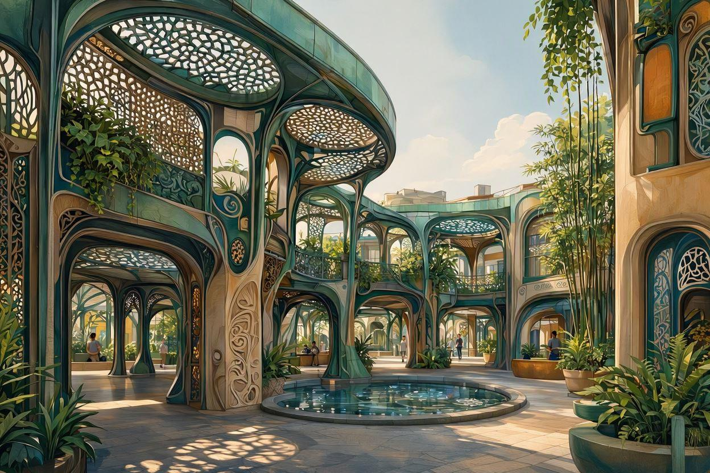
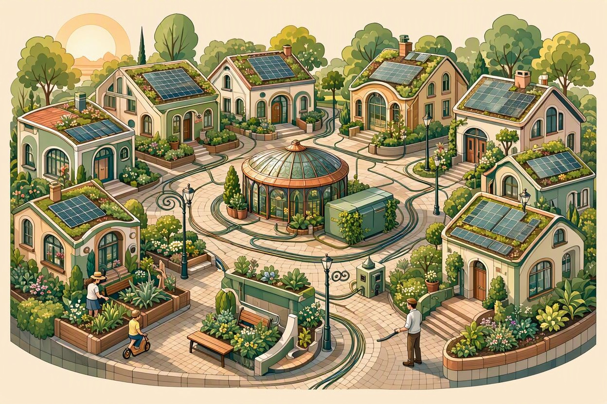
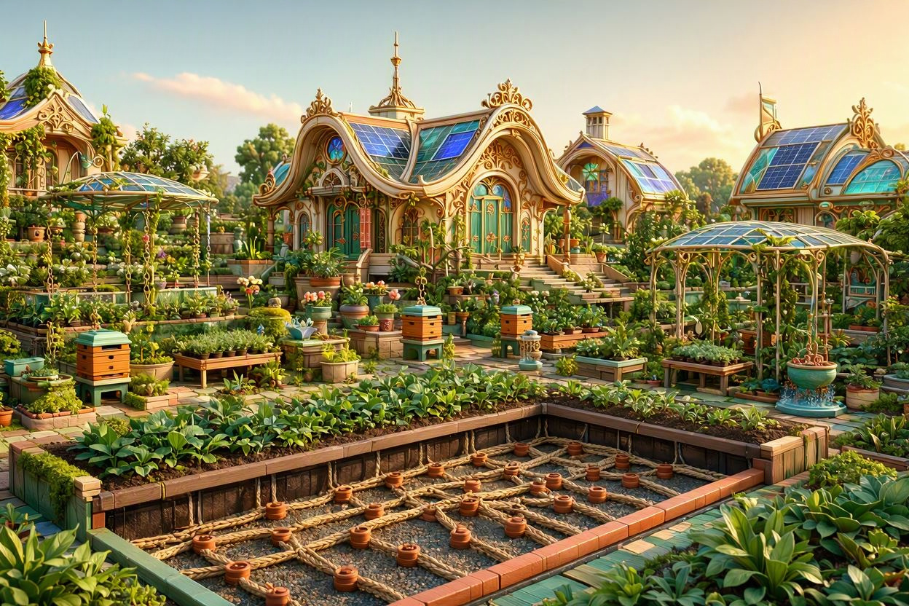

Passive Cooling Arcades
Architectural thermal chimneys designed using regional clay brick and living vine canopies.
Regenerative Practice
The Solarpunk Hub gathers open hardware schematics, community workshop templates, and aesthetic works bridging ecological restoration with human technology.
Explore Systems Edition 2026.1
Compare decentralized infrastructure setups for neighborhood and household implementation.
| System | Primary Function | Complexity | Typical Cost | Maintainability |
|---|---|---|---|---|
| Rainwater Catchment | Passive gravity irrigation | Low | $50 – $150 | High (Seasonal flush) |
| Off-Grid Solar Caddy | Emergency 12V / USB power | Medium | $200 – $450 | Medium (Annual test) |
| Bioponic Digester | Methane gas / fertilizer | High | $350 – $800 | Low (Weekly balance) |

Architectural thermal chimneys designed using regional clay brick and living vine canopies.

Peer-to-peer energy routing diagrams connecting residential rooftop arrays with public battery stations.

Low-evaporation passive hydration vessels engineered for drought conditions and container gardening.
Hands-on sessions for building and maintaining neighborhood systems together.
Assemble a first-flush diverter and gravity-fed barrel to take home.
Bring a charge controller or battery pack for guided testing and repair.
Trade drought-tolerant seeds and learn wick-irrigation container setups.